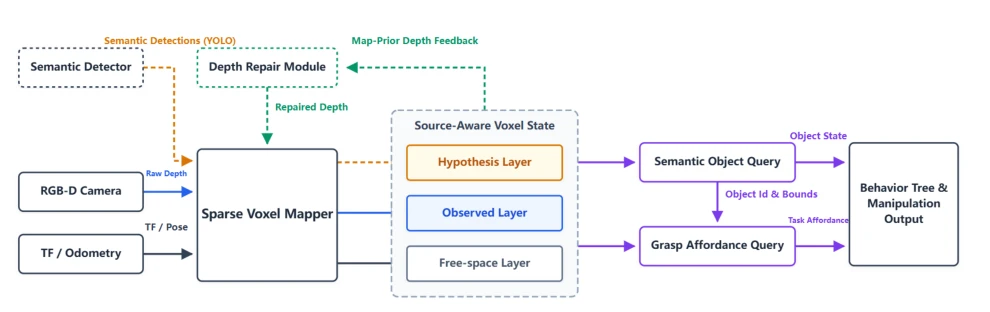
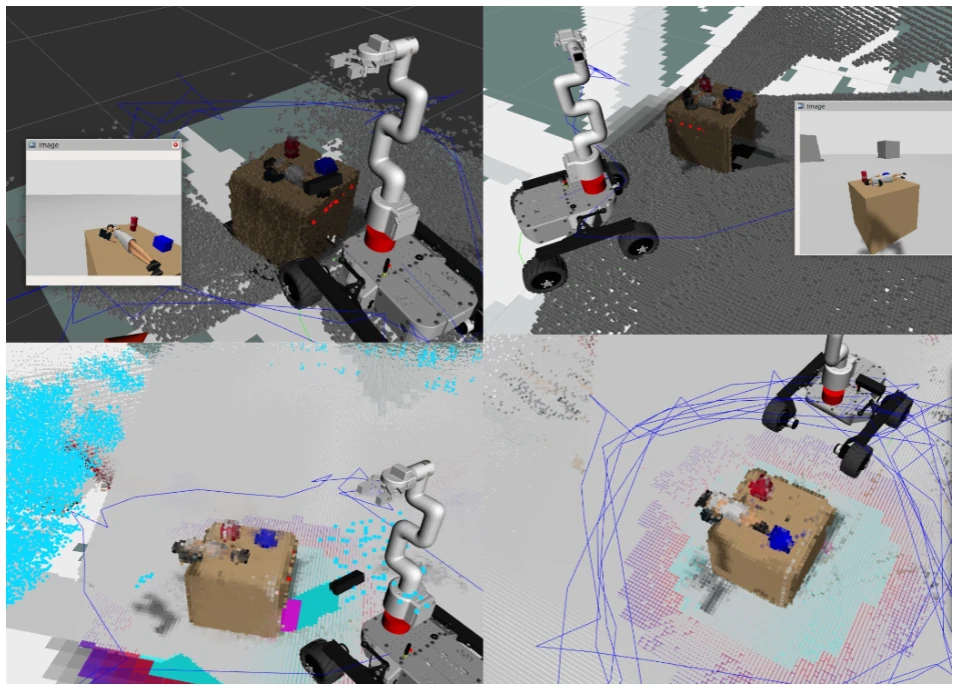
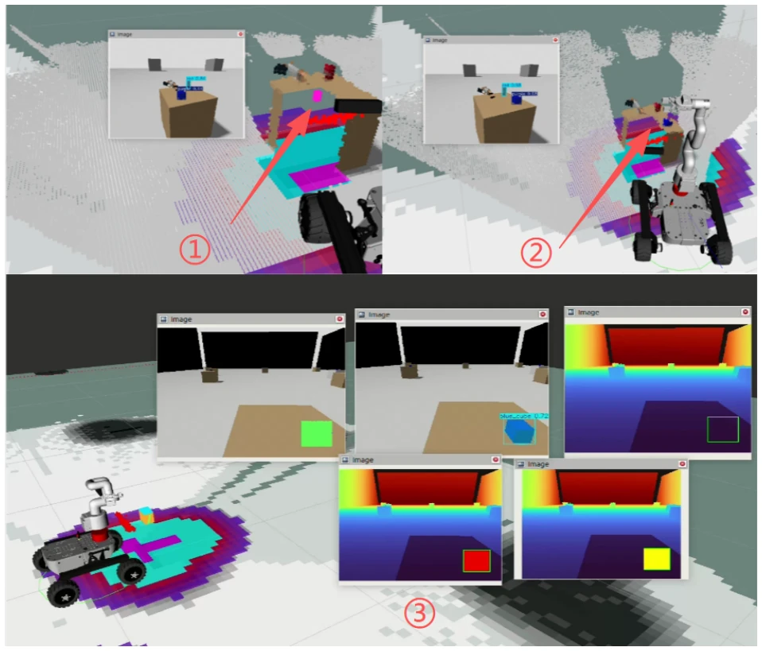

This technical report proposes KRVF, a task-oriented semantic voxel world model for edge mobile manipulation. It does not pursue geometric perfection of traditional reconstruction, but emphasizes "source awareness" and "queryability", attempting to solve the depth failure problem of RGB-D sensors on transparent or reflective objects. The highlight lies in separating observation geometry from semantic hypotheses, preventing semantic priors from contaminating the real map, and providing a direct grasp query interface. But to be a bit sharp-tongued, this currently looks more like a carefully designed ROS 2 middleware prototype rather than a complete perception stack. The authors honestly admit there is no real hardware validation, only the process was run through in simulation, and real-time stress testing for edge hardware is also missing. For the community pursuing "end-to-end", this explicit layering may appear too engineering-oriented, but for robot systems requiring reliable manipulation strategies, this "interpretable map" is indeed more useful than black-box point clouds, it is just currently stuck at the "can run" stage, still far from "easy to use", and lacks quantitative metrics to support its performance advantages.
Mobile manipulation robots need world models that can answer task-level questions, not just geometric reconstruction. Existing works such as OctoMap [1] focus on navigation collision, TSDF systems [2] pursue surface quality, RTAB-Map [4] focus on localization loops. They often treat semantic information as an additional layer, or directly map 2D detection to geometry, leading to maps being incorrectly cleared or contaminated when depth fails (e.g., transparent cups). KRVF points out that in manipulation scenarios, robots need to know "evidence source", "freshness", and "confidence". For example, depth sensors fail on dark objects, pure geometric mapping treats them as free space, while semantic detection may produce hallucinations. Existing methods lack this distinction, causing manipulation modules to be unable to distinguish between "didn't see" and "does not exist". Therefore, a representation layer is needed that can distinguish measurement evidence from hypotheses, support depth repair feedback, and directly output grasp candidates, to fill the semantic gap between perception and manipulation, ensuring robots can act safely under imperfect perception.
The core of KRVF is a sparse semantic voxel field, where each voxel contains a 6-tuple state: occupancy log-odds, appearance, semantic evidence, quality, freshness, evidence type. The pipeline receives synchronized RGB-D, calibration, and pose, fusing them into an observation layer (K_obs), hypothesis layer (K_hyp), and free space layer. Innovations lie in: 1) Source-weighted evidence fusion, different sources (raw depth, repaired depth, semantic priors) update log-odds according to confidence; 2) Observation-Hypothesis separation, semantic priors do not directly cover observation geometry, but act as an independent layer that can expire and be upgraded, preventing hallucination contamination; 3) Map prior depth feedback, rendering the current voxel map as a depth prior to assist in repairing the current depth map; 4) Task-level query interface, directly clustering voxels to generate objects and grasp candidates (top, waist, side), rather than outputting raw point clouds. The ROS 2 implementation decouples the mapper and behavior tree, exposing query capabilities through services/actions. Additionally, it includes dynamic clearing and shadow shell protection mechanisms, ensuring map stability in dynamic environments, making voxel states task memories that can be directly consumed by the behavior tree.

Fig. 1. KRVF pipeline overview. KRVF consumes synchronized RGB-D observations, camera calibration, and TF/pose input, and fuses them into a sparse source-aware voxel world state. The mapping core maintains observed occupancy, free-space evidence, and semantic hypothesis layers. Semantic bridge and depth-repair modules provide optional semantic updates and map-prior repair signals, while downstream behavior-tree and manipulation modules access the representation through object and grasp queries rather than raw point clouds.
Experiments were mainly conducted in simulation and ROS 2 playback, with no real hardware validation. Four qualitative scenes were demonstrated: 1) Real-time voxel mapping, distinguishing active and persistent maps; 2) Semantic grounding, YOLO detection projected onto voxel clusters; 3) Depth failure handling, demonstrating non-destructive completion of the hypothesis layer when depth is missing; 4) Grasp query, generating grasp markers based on voxel stability. Result figures show KRVF can distinguish original missing depth, repaired depth, and semantic hypotheses. But lacks quantitative metrics, such as update latency, query latency, or grasp success rate. Baseline comparison is only mentioned qualitatively, no performance comparison with OctoMap or RTAB-Map. Future work needs to supplement edge hardware CPU usage and real grasp success rate. Currently only concept feasibility is proven, robustness in complex dynamic scenarios is not proven, belonging to typical "simulation first" work, need to be wary of the gap between simulation and reality.

Fig. 2. Qualitative KRVF runtime views. Four RViz views of the same KRVF map representation are shown. The two upper panels show the block-style world rendered from different viewpoints using MarkerArray cube markers, emphasizing the discrete voxel-block structure used for visual inspection. The two lower panels show the corresponding voxel point-cloud representation from two viewpoints, emphasizing the dense spatial distribution of occupied voxels. Together, the panels show that KRVF can expose the same voxel state both as block-level visualization and as point-cloud geometry.

Fig. 3. Depth-failure handling with semantic completion. Three-panel visualization of KRVF behavior around a depth-failure region. 1⃝The upper-left panel shows the target after it is moved into the depth-failure space; KRVF creates a block-level semantic hypothesis in real time even though the physical depth observation is unreliable. 2⃝The upper-right panel shows the target next to the depth-failure space before entering it, where normal observed geometry remains available and no semantic completion is required. 3⃝The lower panel shows a controlled failure case in which the depth values inside the YOLO detection box are manually removed; KRVF creates an explicitly marked queryable grasp target from the semantic evidence and the voxel-world prior. The comparison illustrates that KRVF can c